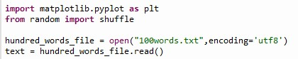
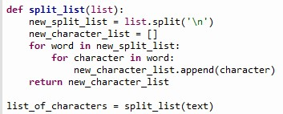
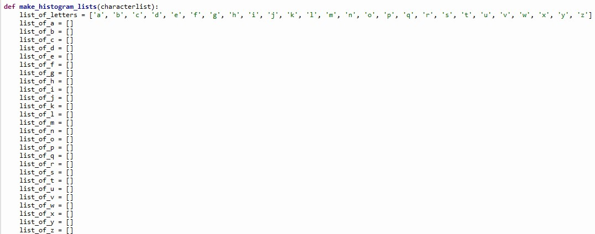
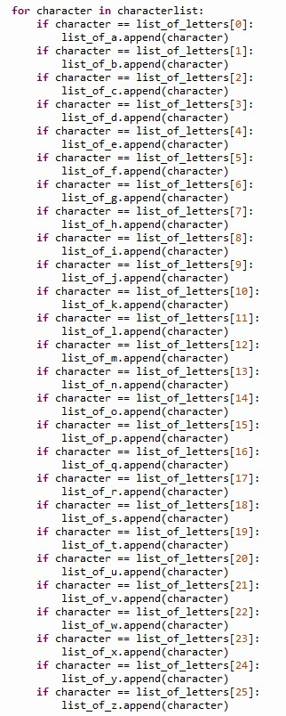
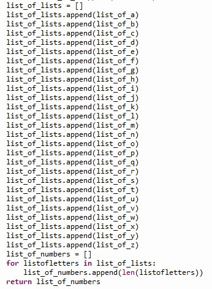
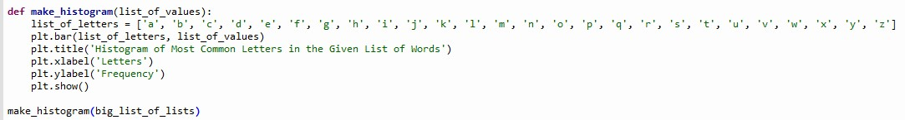
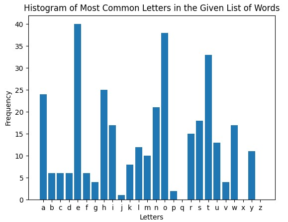
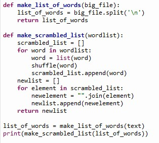
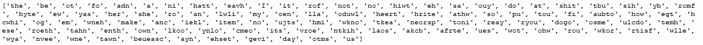

This is a project with two separate functions. It will take a text file with a list of words, each on separate lines, and return something depending on the function used. One function will return a list with all the words, but scrambled(the letter order is different) and the other function will return a histogram showing the frequency of the letters in the words.
Using any text file with words in it, replace the text "100words.txt" with whatever the name of your text file is. Automatically, the Python file will run the histogram function, returning a graph with the frequency of every letter in the list. In order to run the word scrambler, close the tab of the graph and the scrambled list of words should appear.
In total, the Python program uses five functions to return the histogram and the word scrambler. It also uses some non-function code at the beginning in order to read the plaintext file.
The first part of the code imports the two Python modules that are used here, random and matplotlib. It is followed by two lines of code that read the text of the file and place it into a string. In this case, it is using a plaintext file of the 100 most common English words.
This is the first function of the code. split_list takes the large string given by the text and splits it into a list that has characters as elements. In this case, this function would return ['t','h','e',...]
This is the first part of the next function. This next function is make_histogram_lists, which prepares the values from the list of characters to be inputted as a list of integer values for matplotlib to interpret and create a graph for. First, there is a list of letters that lists every letter in a list. There are then 26 lists, named "list_of_(letter)".The purpose of these lists will become evident later in the function.
The next part of the make_histogram_lists function uses a for loop to loop through every character in list_of_characters(the output from split_list) and it will check if it is equal to every letter using list_of_letters(for example, list_of_letters[0]="a", list_of_letters[1]="b", etc.) and place them in the appropriate list(so all the "a"s go in "list_of_as", "b"s in "list_of_bs", and so on).
This last part of the function creates a list of lists that appends all the individual letter lists(list_of_a, list_of_b, etc)into the list. The list of lists will have lists as elements and the end of the function has a for loop that iterates through every list in list_of_lists and appends the length of every individual list into list_of_numbers(the new and final list). This will create a list of data values that can be used in the final function, make_histogram.
This function uses the list that we generated from make_histogram_lists as the y-values for a bar graph/histogram, generated using matplotlib. It uses list_of_letters as the x-values, and creates a bar graph with the frequency of all letters in the given list. Below, you can see the result for the list of 100 most common English words.
 The last two functions are meant to scramble the words and return a new list of the original words, but scrambled. The first function, make_list_of_words, splits the string into a list of individual words. The second function, make_scrambled_list, iterates through the words in wordlist(the output from make_list_of_words) and shuffles the words using the shuffle function from the Python random module. The second for loop iterates through every element in the scrambled list and joins all the elements together to become a new list of words. At the end, you can see an example output below.
